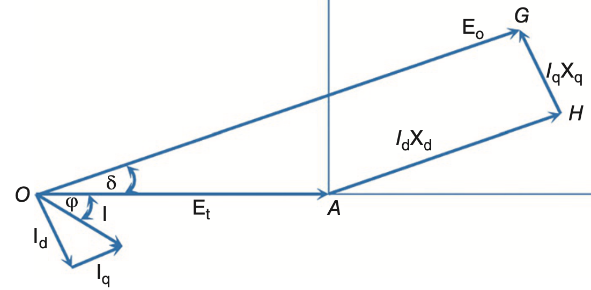

class: center, middle ### EÜAŞ - ODTÜ Elektrik EGEN Generatör Tasarımı ve İmalatı Projesi # Çıkık Kutup Senkron Makinaların Güç ve Tork İlişkisi ## Ozan Keysan [keysan.me](http://keysan.me) Office: C-113 <span class="meta">•</span> Tel: 210 7586 --- # Silindirik Kutup vs. Çıkık Kutup <img src="http://1.bp.blogspot.com/-abfAw-qVR6g/T9il-2u0-wI/AAAAAAAABo0/gg53eqWmfyg/s1600/stator.png" alt="Drawing" style="width: 600px;"/> ### Çıkık kutup: Rotor pozisyonuyla değişen relüktans (dolayısıyla endüktans; \\(L=N^2/R\\)) --- # Silindirik Rotorlu Senkron Makinede Tork <img src="./images/round_rotor_stator.jpg" alt="Drawing" style="width: 300px;"/> ### \\(T=i\_1 i\_2 \dfrac{\partial M}{\partial \theta}\\) --- # Çıkık Kutuplu Senkron Makinede Tork <img src="./images/salient_rotor.jpg" alt="Drawing" style="width: 300px;"/> ### \\(T= i\_1 i\_2 \dfrac{\partial M}{\partial \theta} + \dfrac{1}{2}i\_1^2 \dfrac{\partial L\_{11}}{\partial \theta} \\) --- ## Silindirik Kutuplu Senkron Makine ### Homojen rotor geometrisi: Relüktans tork bulunmaz <img src="./images/ee362/cylindrical.jpg" alt="Drawing" style="width: 600px;"/> --- ## SM PMSM: Yüzey mıknatıs tipli sabit mıknatıslı senkron makineler ### Rotor endüktansı pozisyona göre değişmez: Relüktans tork bulunmaz <img src="./images/ee362/spm.png" alt="Drawing" style="width: 400px;"/> --- # Çıkık Kutuplu Senkron Makineler <img src="https://www.lhm.co.za/uploads/_CGSmartImage/img-36732b2795a47a923e10cd0e2b2ce600.jpg" alt="Drawing" style="width: 350px;"/> ### Değişken hava aralığı bulunur ### Hem relüktans tork hem de senkron tork bileşenleri bulunur --- ## Değişken Relüktanslı Motorlar ### IPM: Interior Permanent Magnet Motor <img src="./images/ee362/ipm.gif" alt="Drawing" style="width: 600px;"/> --- ## Değişken Relüktanslı Motorlar ## SRM: [Synchronous Reluctance Motor](https://www.youtube.com/watch?v=qrRF6WO_-xM) ### Senkron Relüktans Motorlar (mıknatıslı veya mıknatıssız) <img src="./images/ee362/flux-barrier.png" alt="Drawing" style="width: 550px;"/> --- ## Değişken Relüktanslı Motorlar ## Birçok elektrikli aracında bu tip motorlar bulunur <img src="./images/ee362/electric_car_motors.jpg" alt="Drawing" style="width: 700px;"/> --- ## Değişken Relüktanslı Motorlar ## Birçok elektrikli aracında bu tip motorlar bulunur --- # Çıkık Kutuplu Senkron Makineler ## Renault Zoe, 80kW motor <img src="./images/ee362/salient_zoe.jpg" alt="Drawing" style="width: 600px;"/> --- # D-Q Eksenleri <img src="http://lh4.ggpht.com/-hHkxzXhl9E4/TgegixkBCfI/AAAAAAAABoU/88gA-WY2rfc/2_thumb1.jpg?imgmax=800" alt="Drawing" style="width: 500px;"/> --- # D-Q Eksenleri <img src="http://lh4.ggpht.com/-hHkxzXhl9E4/TgegixkBCfI/AAAAAAAABoU/88gA-WY2rfc/2_thumb1.jpg?imgmax=800" alt="Drawing" style="width: 300px;"/> ## Direct Axis: d-axis ## Quadrature Axis: q-axis --- # D-Q Eksenleri <img src="http://www.copper.org/publications/newsletters/innovations/2000/06/images/cu_sprcndrs_fig2.gif" alt="Drawing" style="width: 450px;"/> ### [Relüktans tork bileşeni](https://www.youtube.com/watch?v=hDJnLt7cBTY) --- # D-Q Eksenleri ## Çıkık kutuplu makinelerde: \\(L_d > L_q \rightarrow X_d > X_q\\) ### (genellikle \\(X_q = 0.5 - 0.8 \; X_d\\)) ## Silindirik rotor makinelerde: \\(X_d = X_q = X\_s\\) --- # Çıkık kutup makinelerde Faz Diagramı ## Faz akımı\\(I_a\\)'nın iki bileşeni bulunur ## \\(\vec{I_a} = \vec{I_d} + \vec{I_q}\\) - ## d-eksen akımı \\(I_d\\): \\(\phi_f\\) ile aynı fazdadır - ## q-eksen akımı \\(I_q\\): ## \\(\phi_f\\) ile dik, dolayısıyla, \\(E_f\\) ile aynı fazdadır --- # Çıkık kutup makinelerde Faz Diagramı  ### Generatör modu, endüktif güç faktörü --- # Çıkık kutup makinelerde Faz Diagramı ## Önemli noktalar: ## \\(|E_f| = V_t cos(\delta) + X_d I_d \\) ## \\(I_d \\)'nın \\(E_f\\)'in büyüklüğü üstündeki etkisi daha fazladır --- # Çıkık kutup makinelerde Faz Diagramı ## Önemli noktalar: ## \\( V_t sin(\delta) = X_q I_q \\) ## \\( I_q \\)'nun yük açısı \\(\delta\\) (dolayısıyla tork) üstündeki etkisi daha fazladır. --- # Çıkık kutup makinelerde Faz Diagramı ## Stator sargı direnci \\(R_a\\) dahil edildiğinde <img src="./images/salient_phasor.png" alt="Drawing" style="width: 800px;"/> --- # Çıkık kutup makinelerde güç denklemleri ## \\(P = 3 V\_t I\_a cos (\theta) \\) -- ## \\( I\_a cos (\theta) =\\)\\( I\_d sin (\delta) + I\_q cos (\delta) \\) -- ## \\(P = 3 V\_t (I\_d sin (\delta) + I\_q cos (\delta) ) \\) --- # Çıkık kutup makinelerde güç denklemleri ## \\( V_t sin(\delta) = X_q I_q \\) -- \\( \rightarrow I_q =\dfrac{V_t sin(\delta)}{Xq} \\) -- ## \\( V_t cos(\delta) = E_f - X_d I_d \\) -- \\( \rightarrow I_d =\dfrac{E_f - V_t cos (\delta)}{X_d} \\) --- # Çıkık kutup makinelerde güç denklemleri ### Toplam Güç: ### \\(P = 3 \left[ \dfrac{V_t E_f}{X_d}sin(\delta)+ \dfrac{V_t^2(X_d - X_q)}{2 X_d X_q}sin(2\delta) \right]\\) -- - ## Soldaki kısım: Silindir rotor makinelerdeki ile aynı -- - ## Sağdaki kısım: Relüktans güç (\\(E_f\\)'den bağımsız, ikaz akımı yokken bile mevcut) --- # Çıkık kutup makinelerde güç denklemleri <img src="./images/power_salient.png" alt="Drawing" style="width: 800px;"/> --- ## Bu sunumu aşağıdaki linkten indirebilirsiniz: ## [keysan.me/egen](http://keysan.me/egen)